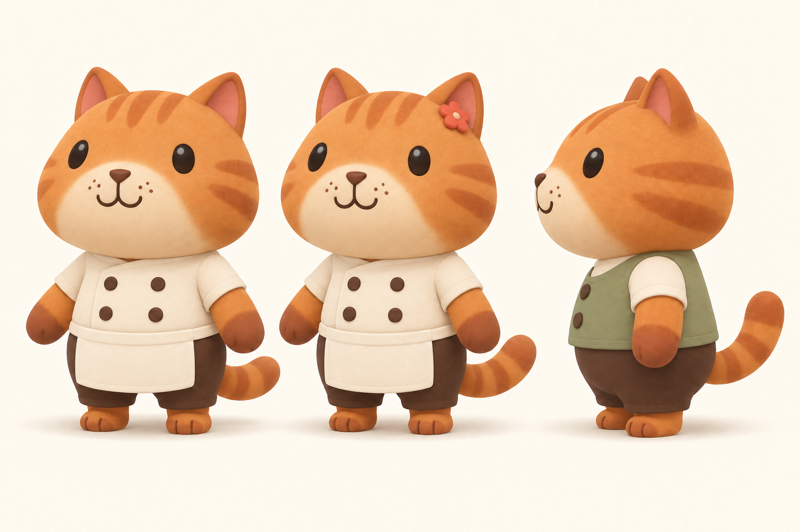
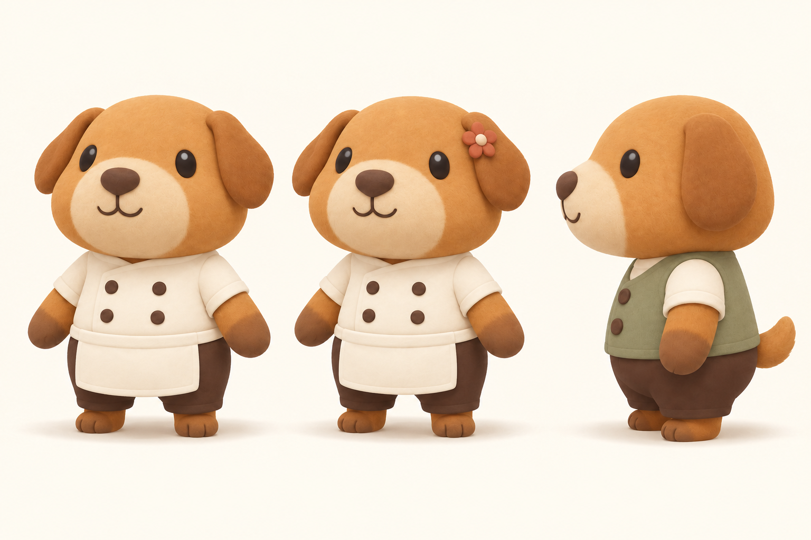
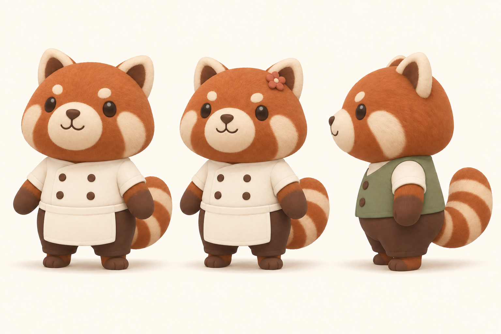
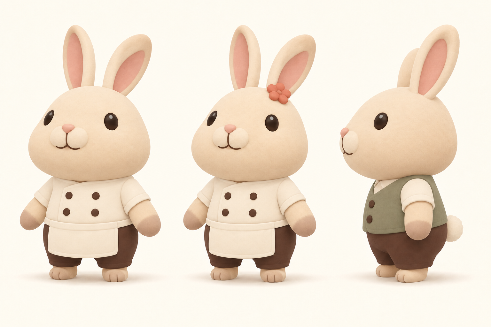
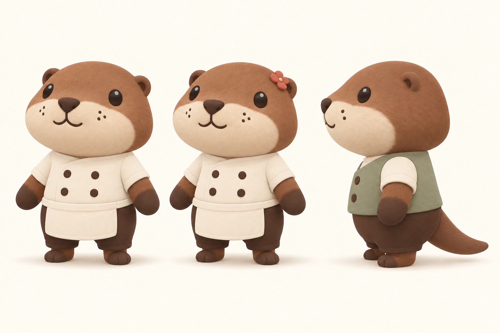
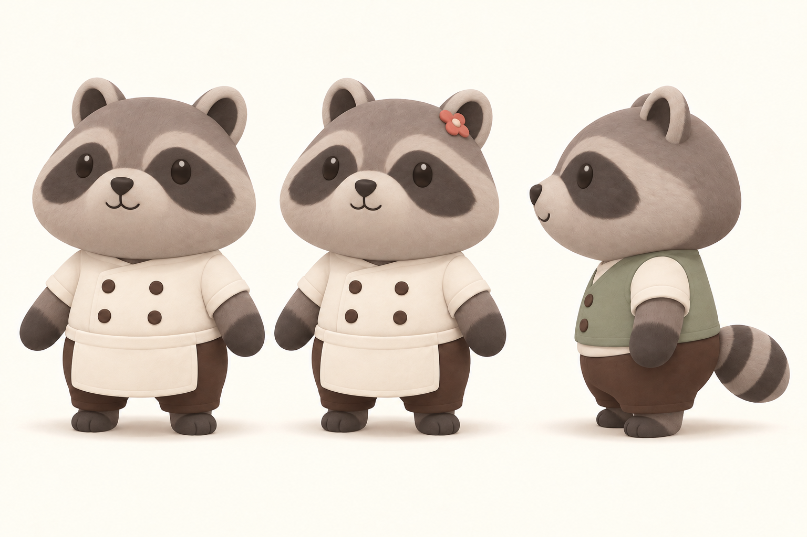

CatRounded triangular ears, a tiny feline nose, broad ginger stripes and a curved tail.Left · Male chef presetCenter · Female chef presetRight · Customer profile
DogShort floppy ears, a compact cream muzzle and a rounded puppy nose.Left · Male chef presetCenter · Female chef presetRight · Customer profile
Red pandaRust coat, pale cheek patches and a broad, curled ringed tail.Left · Male chef presetCenter · Female chef presetRight · Customer profile
RabbitTall soft ears above the same compact body; tiny legs and a cotton tail.Left · Male chef presetCenter · Female chef presetRight · Customer profile
OtterCream muzzle pads, tiny ears and a smooth tapering tail.Left · Male chef presetCenter · Female chef presetRight · Customer profile
Raccoon · optionalOptional cast member: cool gray fur, a dark eye mask and a compact ringed tail.Left · Male chef presetCenter · Female chef presetRight · Customer profile